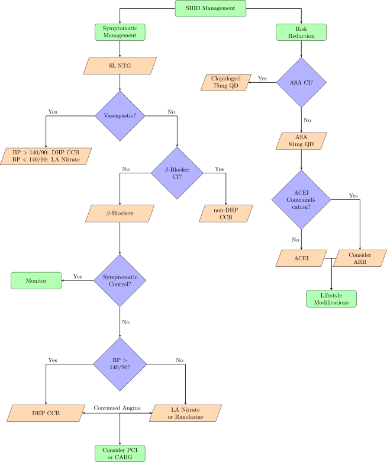

Cardiac Anatomy

Athlerosclerosis
Athlerosclerosis occluds arteries, and when a large amount of a coronary artery is obstructed, angina can occur. The process of athlerosclerotic development is as follows:
- LDL accumulation and oxidation in the wall of a vessel
- Macrophage infiltration and uptake of the LDL deposit
- Formation of foam cells
- Smooth Muscle proliferation and Cap formation
- Cap rupture
- Thrombosis
General Angina
Pathophysiology
Oxygen demand to cardiac tissue exceeds the ability of coronary circulation to supply oxygen to the cardiac myocytes, leading to ischemia and chest pain
Oxygen Supply and Demand
Preload: Decreased preload is caused by veinous vasodilation, resulting in decreased oxygen consumption and increased myocardial perfusion
Afterload: Decreased afterload is caused by arterial vasodilation, leading to decreased oxygen consumption
Heart Rate: Decreased HR leads to decreased oxygen consumption and increased coronary perfusion
Risk Factors
- Age: ≥ 55 for men or ≥ 65 for women
- Smoking
- DM
- HTN
- Kidney Disease
- Obesity
- Sedentary Lifestyle
Stable Angina
Pathophysiology
Stable angina is a demand ischemia caused by a temporary increase in O2 demand by cardiac myocytes in the prescense of a diminished O2 supply, most commonly the result of severe ASCVD leading to significant decreases in blood flow (>70%) through the coronary arteries without myocardial necrosis. Stable angina can be of either a fixed threshold, a variable threshold, or both. Stable angina should have stable characteristics for at least 2 months.
Clinical Presentation and Dx
Dx
- Look for risk factors
- ST-Depression During Angina
- Stress Test
- Cardiac Catheterization
- Electron Beam CT (AHA does not reccomend because results will not change recommendation)
PQRST
- Precipitating Factors: Exertion etc
- Palliative Measures: Rest and/or SL NTG
- Quality of Pain: Squeezing, heaviness, tightening, etc
- Region and Radiation: Substernal, ocassionally radiating to left arm
- Severity of Pain: Generally >5
- Timing: Typically 5-10min, must be < 20
Common Precipitating Factors
- Cold Air (leads to increased HR)
- Large Meals
- Exertion
- Smoking
EKG Findings
ST-Depression only during episodes of angina, EKG is otherwise unremarkable
Treatment
Common Drug Classes for Treatment
- Organic Nitrates: Dilation of Venous Blood Vessels to Reduce Preload
- NTG for acute attacks
- IS(M/D)N for prophylaxis
- DHP CCBs: Arterial Vasodilation to Decrease Afterload
- Non-DHP CCBs: Negative Inotropy and Chronotropy to Decrease Oxygen Consumption
- β-Blockers: Negative Inotropy and Chronotropy to Decrease Oxygen Consumption
- Ivabradine: Negative Chronotropy via HCN Inhibition to Decrease Oxygen Consumption
- Ranolazine: Inhibits late-Na current to inhibit reverse calcium transport during ischemic attacks
- Statins: Decrease Athlerosclerosis
Algorithm

Anti-Platelet Therapy
- ASA: 75-162mg QD (81mg QD most common)
- Clopidogrel: 75mg BID
- Prasugrel*: 10mg QD
- Ticagrelor*: 90mg BID
- Cangrelor*: IV Only
*following ACS only
Primary Prevention
Patients 50-69 with ≥ 10% 10-year CVD risk should be initiated on low-dose aspirin indefinitely if they have no additional bleeding risk. Older patients can continue ASA or initiate ASA; however, shorter life expectancy means the risks may outweigh the benefits. There is insufficient evidencefor a recomendation in patients under 50.
Secondary Prevention
| Interventions | Drugs | Duration |
|---|---|---|
| SIHD | ASA 81mg QD*^ | Indefinitely |
| Elective PCI + BMS | ASA 325mg before then 81mg QD & Clopidogrel 300-600mg before then 75mg QD | ASA: Indefinitely; Clopidogrel: Minimum of 1mo, typically 12mo |
| Elective PCI + DES | ASA 325mg before then 81mg QD & Clopidogrel 300-600mg before then 75mg QD | ASA: Indefinitely; Clopidogrel: Minimum of 6mo, typically 12mo |
| PCI/Stent + CABG | Restart regimine for stent | ASA: Indefinitely; Repeat duration of stent (i.e. minimum set by kind of stent, 12mo typical) |
| CABG | ASA 81mg QD & Clopidogrel 75mg QD | ASA Indefinitely; Clopidogrel 12mo |
*Pts with absolute contraindications or significant intolerance to ASA can initiate Clopidogrel 75mg QD
^DAPT: Dual Antiplatelet Therapy may be given despite lack of evidence in high risk patients
DAPT Score and Risk of DAPT Duration
| Characteristic | Points |
|---|---|
| Age ≥ 75 | -2 |
| Age [65,75) | -1 |
| Age < 65 | 0 |
| Current Smoker | 1 |
| DM | 1 |
| MI at Presentation | 1 |
| Prior PCI or MI | 1 |
| Stent Diameter < 3mm | 1 |
| Paclitaxel-eluting Stent | 1 |
| CHF with LVEF < 30% | 2 |
| SVG PCI | 2 |
Scores ≥ 2 favor prolonged therapy, while < 2 have an unfavorable benefit/risk ratio for prolonged therapy (use standard therapy).
ACEIs in CAD
ACEIs and ARBs have been show to stabilize plaques, improve endothelial function, inhibit smooth muscle migration, decrease macrophage infiltration, and possibly decrease oxidation of LDL. All CAD patients, especially those with CHF with LVEF ≤ 40%, HTN, DM, or CKD should be on an ACEI or ARB.
Symptomatic Control
Acute Nitrates
SL Nitroglycerin is the preferred agent for acute attacks, given as either 0.3-0.6mg SL tabs or 0.4mg/spray SL spray. NTG tablets cannot be stored in vials other than that which they are shipped in, and cannot, by law, have childproof caps. It is appropriate to have a patient keep a diary of nitrate use to record the frequency of their attacks the frequency of rescue NTG use.
Dosing
- Sit Down (Risk of Hypotension)
- Take 1 dose
- Wait 5 minutes
- If pain does not resolve, call 911 and take a second dose
- Take a maximum of 3 doses as needed
β-Blockers
Beta-Blockers work via decreasing myocardial contractility and heart rate, decreasing oxygen demand. Cardioselective agents such as Metoprolol (<100mg dose) and Atenolol (<50mg dose) are prefered, and beta-blocker with intrinsic sympathomimetic activity should be avoided due to the increased resting HR. β-blockers should be dosed to achieve either: RHR 50-60, exercise HR < 100, or exercise HR 75% of HR causing angina. For the specific behavor of β-blockers, see their section in Sympatholytics.
CCBs
Long acting DHP CCBs or non-DHP CCBs are appropriate therapy choices for prevention of anginal episodes. Consider the distinct behaviors of the DHP (vasodilatory similar to nitrates) and non-DHP (negative inotropes and chronotropes, similar to β-blockers, but with small amounts of vasodilation) classes in determining appropriate therapy. Non-DHPs have the significant and unique monitoring parameter of constipation, especially verapamil. IR DHP CCBs should be avoided due to marked tachycardia.
Chronic Nitrates
ISDN, ISMN, and transdermal NTG are commonly used. These agents should not be used as monotherapy due to a required washout period of 10-12hrs with no drug on board to prevent tolerance. Other downsides include frequency of administration (BID-QID).
Ranolazine
Ranolazine inhibits late-Na influx into cardiac myocytes, which during ischemia can change the sodium gradient enough to reverse Ca transport into the cell, creating a positive feedback loop of contraction and damaging the ischemic tissue. Ranolazine has no impact on BP or HR, but can cause long Q-T intervals, which has been shown to relate to increased risk of sudden cardiac death. Ranolazine is a third line agent and is typically used in combination with multiple other agents or if adequate control cannot be reached with dual therapy due to decreased HR and BP.
Side Effects
- Constipation
- Nausea
- Dizziness
- Headache
- Dose-Dependent QT Prolongation
Ivabradine
Ivabradine can be used off label for angina in adults unable to tolerate β-blockers, with no arrhythmias and a RHR ≥ 70. This medication can also be used in combination with β-blockers if adequate control could not be reached with an adequate β-blocker dose.
Compelling Indications
- Prior MI: Non-ISA β-Blocker
- LV Systolic Dysfunction/HF: Carvedilol, Bisoprolol, or Metoprolol XL
Recommended Therapies with Other Conditions
- Sinus Bradycardia, 2nd or 3rd Degree AVB: DHP CCB or Nitrate
- Sinus Tachycardia, SV Tachycardia, AFib: β-blocker or non-DHP CCB
- Ventricular Arrhythmias: β-blocker
- Severe HAs: β-blocker or non-DHP CCB
- Hyperthyroidism: β-blocker
- Essential Tremor: Non-Cardioselective β-blocker
Therapies to Avoid with Other Conditions
- Sinus Bradycardia, 2nd or 3rd Degree AVB: β-blocker or non-DHP CCB
- Sinus Tachycardia, SV Tachycardia, AFib: Short Acting DHP CCB or Nitrate
- Prior MI: ISA β-blocker or Short Acting DHP CCB
- Severe HAs: Nitrates or DHP CCB
- Bronchospastic Disease: β-blocker
- PVD, Depression: Non-Cardioselective β-blocker
Prinzmetal’s (Variable) Angina
Pathophysiology
Prinzmetal’s angina is a supply ischemia resulting from spontaneous vasospasm in the coronary vessels, typically the result of athlerosclerotic insult to the endothelium, leading to a short-lived ischemia. Prinzmetal’s angina typically presents at night when parasympathetic tone is higher.
Treatment
- See the above treatment algorithm under “Vasospastic Angina”
- DHP CCBs and Nitrates are recommended based upon blood pressure
- AVOID β-blockers as they can induce coronary vasospasm